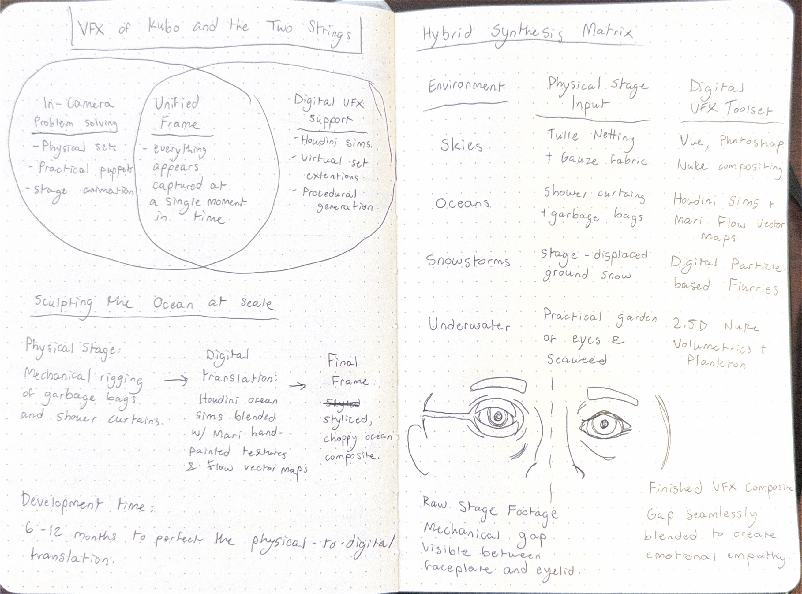

Artificial Motion / Interaction 2
Blending puppets and digital effects
Kubo and the Two Strings: Steve Emerson – VFX Supervisor – LAIKA
Vincent Frei (interviewing Steve Emerson, VFX Supervisor at LAIKA)
Professional interview / behind-the-scenes production case study
Why I chose this source
This interview explores how LAIKA combines traditional stop-motion techniques with digital effects to create complex animated sequences. It provides insight into how technology can support traditional craftsmanship, expand creative possibilities, and help animators overcome production limitations without entirely replacing the handmade process.
What I checked
I checked Steve Emerson's interview against an additional article from Digital Trends (Digital Trends article), which confirmed that LAIKA combines physical stop-motion animation with digital effects to expand what's possible without replacing traditional techniques. One important distinction is that the digital technology discussed is primarily CGI, compositing, and visual effects, not generative AI. This reinforced the idea that technology can enhance traditional craftsmanship while allowing animators to maintain creative control, but it doesn't necessarily prove that newer AI tools would have the same effect.
Visual notes




How this shaped my project
This research interaction helped me better understand how traditional stop-motion animation can work alongside modern digital technology without losing the craftsmanship that makes it unique. Looking into LAIKA's production of Kubo and the Two Strings showed me how combining physical animation with digital effects can expand creative possibilities while still keeping the handmade elements at the center of the process.
AI helped me find a more in-depth source that explored the relationship between traditional animation and digital production techniques. However, I had to verify the distinction between digital effects and generative AI. While LAIKA uses technology like CGI, compositing, and 3D printing, these methods aren't necessarily examples of AI-generated content. Recognizing that difference helped me avoid making assumptions about how AI is currently being used in professional stop-motion production.
This interaction also shifted my thinking beyond just the technical problems beginners face. I'm becoming more interested in how technology can assist animators throughout the creative process without taking away their control or replacing the hands-on experience.
For my final project, this reinforces the direction of creating a companion tool that supports animators rather than doing the creative work for them. I want the tool to make the production process more approachable while still leaving the actual animation and creative decisions in the user's hands.
My next move is to explore more examples of how technology is incorporated into stop-motion workflows, particularly where it improves efficiency or solves problems without sacrificing artistic involvement.